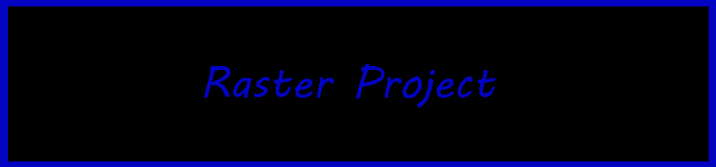

Home| Raster | Vector | Videos | Art | Contact Info |With this project I wanted to do a 'fighting game character select screen' because I love fighting games like Smash Bros and Guilty Gear so I thought it would be fun to attempt something like this. I think it turned out well I got a majority of my favorite characters on it and I felt pretty good about it.
I had alot of ideas of what I wanted to do for a first project, but there was one main idea that I was going to stick with and that was a bunch of my favorite characters in one picture. Making my raster project a character select screen meant that I could put more characters on it.